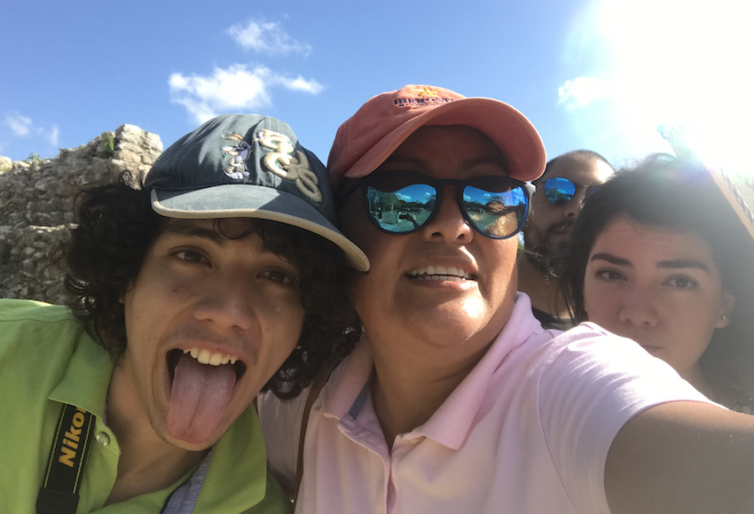

A todos los papás y mamás quiero decirles que estoy de vuelta. No es que me haya ido, simplemente tomé un descanso después de un arduo trabajo de muchos años. Para quienes no me conocen me presento, soy Hilda Magaña, directora académica y fundadora de educazion.net, soy licenciada en sistemas de computación administrativa y actualmente superviso el desarrollo académico de las plataformas educazion.net y prepaenlinea.mx. Durante muchos años (más de 15) trabajé sin descanso en la creación, desarrollo y consolidación de nuestras plataformas. Finalmente el año pasado logramos fusionar un equipo de trabajo muy fuerte y creativo lo cual me permitió darme un descanso y relajarme un poco, solo estuve a cargo de coordinar ciertas áreas de trabajo así como la supervisión en la creación de un equipo de talentosos programadores, desarrolladores, diseñadores y creativos que en breve (septiembre del 2021) nos darán una grata sorpresa. Disfruto mucho trabajar con personas creativas, soñadoras y de preferencia jóvenes que no les gustan los límites (me encantan los renegados), el equipo de trabajo de educazion.net está formado por este tipo de personas con estas características lo cual me llena de entusiasmo y pasión.
Amo profundamente la Palabra de Dios y creo en todo lo que en ella está escrita, pero detesto la religiosidad, creo firmemente que la vida cristiana debe ser algo muy íntimo y personal, que no es mi deber ni responsabilidad juzgar o criticar la forma de vivir y pensar de otras personas, por el contrario, creo que Dios me ha llamado a amar y ser de apoyo para aquellos que lo necesitan.
En este sentido, he visto la necesidad que hay de guiar a una nueva generación de padres que han tomado la decisión de salirse del sistema y comenzar la gran aventura de educar en casa, veo con tristeza que muchos de ellos están solos en esta labor, sin rumbo y algunos hasta sienten que están fracasando o bien, están cometiendo errores. Igualmente veo muchas personas allá afuera haciendo ruido sobre la educación en el hogar, cuando no tienen idea de lo que se trata y aún así se atreven a guiar a otros.
Y les decía una parábola: ¿Acaso puede un ciego guiar a otro ciego? ¿No caerán ambos en el hoyo? Lc.6:39
Honestamente siento una gran carga ante esta situación, muchos padres se están dejando guiar por otros padres igual de confundidos que ellos y esto puede generar caos, frustración y mucho dolor.
No es que sea una experta en educación, pedagogía o psicología, pero creo que tengo algo que aportar. Mi esposo y yo criamos y educamos a nuestros tres hijos en casa, y aunque no son seres perfectos, puedo decir que son personas felices e independientes que están cumpliendo su propósito o bien, están en este camino, los tres ya son personas adultas e independientes lo cual me permite tener tiempo libre para este nuevo proyecto.
La intención de este blog no es enmarcar nuestros logros o estandarizar el éxito obtenido. Mi deseo es mas bien abrir mi corazón compartiendo contigo aquellas cosas que sí funcionaron y aquellas que, definitivamente, no valieron la pena.

Sin más premisa mi primer consejo es este: Disfruta a tus hijos mientras están contigo. El tiempo es breve, solo tenemos los primeros 18 años de sus vidas para impactarlas, no las desperdiciemos alejándolos de nuestra vida. Quizá tienes proyectos, planes o negocios que emprender, entonces ¿qué esperas? involúcralos, que sean parte de tu visión y sueños, hazles partícipes, no los alejes, deposita la visión que Dios a puesto en tu corazón en sus corazones, te recuerdo que solo tienes 18 años para impactar sus corazones, resta la edad que tienen ahora y el resultado es la cantidad de años que te quedan para ser de impacto a sus vidas. Quizá después se tengan que ir a la universidad, o bien, permanezcan en casa contigo pero ya no será igual, ya no tendrás la misma influencia que ahora puedes tener, así que no pierdas el tiempo, ni siquiera invirtiéndolo en otras personas, puedes hacerlo, pero ellos no son tu prioridad, tu prioridad es tu casa, tus hijos, tu familia.
Llegará el día en que te quedarás solo con tu cónyuge, ese día en el que no haya ruido en casa, en el que de pronto tú y tu esposo(a) se miren a los ojos y digan ¿y ahora? ¿qué hacemos? … no te rías, esto tarde o temprano ocurrirá. Ahora es el momento más importante de tu vida, tienes la oportunidad de crear con tus hijos una hermosa conexión emocional, intelectual, y por su puesto, espiritual, que perdurará para siempre. Este tipo de conexión no se logra fácilmente, no es automática, requiere invertir tu tiempo y atención a todas y cada una de las necesidades de nuestros hijos.
Nuestros hijos son la herencia más valiosa que Dios depositó en nuestras manos y de nosotros depende su éxito o fracaso, su felicidad o miseria, con nada podrás recuperar un corazón roto, lastimado o abandonado, sabemos que Dios hace milagros, pero depende de nosotros ser el milagro más grande que ellos necesitan, hemos sido llamados a representar la paternidad de Dios aquí en la tierra, hagámoslo con todo nuestro corazón, en el tiempo que se necesita, no busquemos pretextos, rompamos moldes y esquemas de crianza obsoletos que solo sirven para justificar fracasos y errores.
Nadie tiene mayor amor que este, que uno ponga su vida por sus amigos. Jn. 15:13
Si hemos sido llamados a poner nuestra vida por nuestros amigos, ¿Cuánto más no debemos ponerla a favor de nuestros hijos?